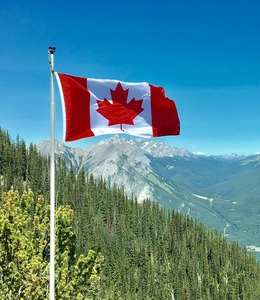

Our Location
Discover Victoria
Welcome to Victoria, British Columbia, where Aqua Adventures calls home. Situated on the southern tip of Vancouver Island, Victoria boasts a picturesque coastline, charming harbor, and an abundance of natural beauty waiting to be explored. From tranquil bays to rugged shorelines, Victoria offers endless opportunities for outdoor adventure and discovery in Canada.
Our Amenities
- Boat House: Our spacious boat house serves as the launch point for your aquatic adventures. Equipped with state-of-the-art facilities, our boat house provides a convenient and comfortable starting point for your kayaking journey.
- Washrooms: We understand the importance of convenience and comfort during your outdoor excursions. That's why we offer clean and well-maintained washroom facilities on our premises, ensuring that you can freshen up before or after your kayaking adventure.
- Change Rooms: Prepare for your kayaking excursion or freshen up after your adventure in our designated change rooms. With our facilities, you can comfortably unwind after your paddle.
Experience the beauty of Victoria, BC, and make the most of your kayaking adventure with AquaAdventures' convenient amenities and prime location. Ready to begin your Aqua Adventure?
Contact Us